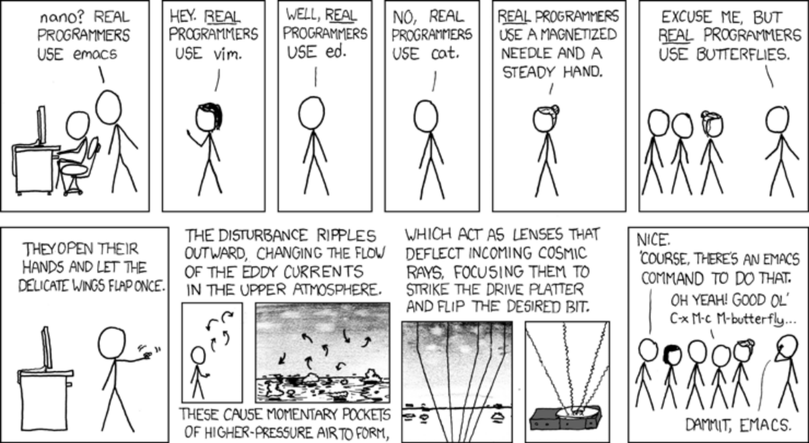

Table of Contents
1 XKCD

2 What is Emacs?
2.1 Emacs history
2.1.1 From the EmacsWiki:
- Emacs began at the Artificial Intelligence Laboratory at MIT. Beginning in 1972, staff hacker CarlMikkelsen added display-editing capability to TECO, the text editor on the AI Lab’s IncompatibleTimeSharingSystem (ITS) “Display-editing” meant that the screen display was updated as the user entered new commands; compare the behavior of "ed". In 1974, Richard Stallman added macro features to the TECO editor.
- In 1976, Stallman wrote the first Emacs (“Editor MACroS”), which organized these macros into a single command set and added facilities for SelfDocumentation and to be extensible. TecoEmacs soon became the standard editor on ITS.
2.2 Emacs is a super extensible "editor" that is written in ELisp
2.2.1 Why is editor in quotes?
- Emacs does much more than edit text
- To show itself off, Emacs by default comes with a full game of
tetris!
Let me assert my nerd dominance by showing my tetris skills :)
(tetris)
- It even works in the terminal! Albeit kinda squished
- Besides being a great tool for when you're bored and your boss is looking
away, Emacs can also:
- Write emails with the mu4e package
- Write documents with Org Mode (more on this later)
- Be your window manager with the exwm package
- I've given this a try, but I'm gonna stick with dwm
Browse the internet with eww!
(eww "https://gnu.org")
I'm not entirely certain why one would do this, but hey it's there!
- To show itself off, Emacs by default comes with a full game of
tetris!
2.2.2 Some Emacs Jargon
Before continuing, I want to define some terms that are common in emacs.
- Weird key-binding notation?
- "C" is control
- "M" is alt/meta
- "S" is shift
- When there is a "-" between two keys that means press them together.
- When there is a space, seperate them
- "C-x C-f" means press control and x together, then control and f.
- Or hold down control, press x, then press f while still holding it down
- What is a "buffer"?
- A buffer is like a "tab" in most editors. You can swap between them with "C-x C-b"
- What is a "window"?
- A window is where a buffer is drawn to. They are like the window splits in Vim
- Cycle between windows with "C-x C-o"
- Close a window with "C-x 0"
- What is a "frame"?
- A frame is a whole instance of emacs. These are what you'd regularly refer as windows in normal computer discussions. You can move them around, minimize them (if you're using a tiling window manager), close them, etc.
- Not very commonly used, though every once in a while you might come across a post asking about them
- Good-to-know keybindings
- Quit emacs with "C-x C-c"
- Find a file with "C-x C-f"
- Save a file with "C-x C-s"
- Accidentally pressed a different command and you have no idea what you're looking at? "C-g" will probably get you out of it.
- "C-x u" to undo your typing
- "C-space" to select a region and "C-g" to stop selecting it
- With a region selected, cut it with "C-w" (this is also known as "killing")
- Paste with "C-y" (this is also known as "yanking")
- Window/buffer keybindings described above
- Movement keys
- Searching for commands
- "C-h a" to find the keybindings for a command, or to search for a command
- "C-h k" to find the name of a function tied to a keybinding
2.3 What is ELisp?
Elisp is a dialect of Lisp specifically written for Emacs. It makes it super easy to configure Emacs if you know just a little bit of Lisp. Lovers of Erik's scheme talk will feel right at home with ELisp! (everything is defined in terms of elisp functions, even moving the cursor and entering text)
In fact, let's take a look at an example. Here I will split this window into three sections:
(split-window-right) (split-window-below)
To cycle through these windows, I press "C-x C-o". As you can see, I cycle through in the order they were created.
- However, what if I wanted to go back a window?
Emacs doesn't provide a keybinding for this by default, so let's make it in Elisp ourselves!
(defun go-back-window () (interactive) (other-window -1))
Let's add a key binding for this!
(global-set-key (kbd "C-c u") 'go-back-window)
3 Why is Emacs better than Vim?
3.1 Org mode
Org mode is notorious for taking over programmer's lives. It's motto is even "your life, in plain text". You can create calendars, make Latex documents, make websites and blog posts with your own CSS, export to Open Office formats, really anything you're creative enough to figure out.
3.2 Amazing package support
Yeah yeah, vim has packages too… but they're not as cool as Emacs :)
The emacs community is full of useful packages that are super easy to install
3.2.1 MELPA
This resource makes it even easier to install user packages
3.2.2 SLIME
Get into a great Lisp interactive session!
3.2.3 Magit
Great for git interaction!
3.2.4 Company-mode
For completion
3.2.5 Undo-tree
For undoing your work
3.2.6 LSP-mode
For running language servers
4 First steps in going forward with Emacs
4.1 Are you a vim user converting from the dark side?
Check out Doom Emacs to get started on your journey!
4.2 Want to learn ELisp?
Check out "Writing GNU Emacs Extensions". It's a really good O'Reilly book that you can access for free through USU.
4.3 Just want to get started with Emacs?
Dive right into emacs by installing it with whatever package manager you use. Read the guide that is accessible on the default emacs start page! It will teach you the basics. From there, just scrounge around the internet for resources. There are plenty. If you need a recommendation, you can start at the emacs wiki.
5 The compromise
5.1 Can't decide which is better (it's emacs)? Good news! You don't have to!
Let's take a look at the "evil-mode" package. This is pretty much vim emulation within emacs. It is the best vim emulator ever; whatever vim can do, Evil Mode can do it too.